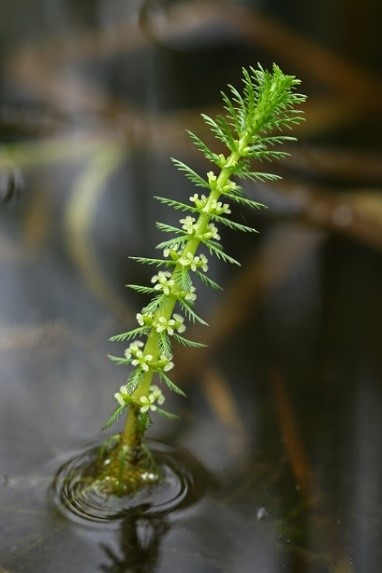

|

Все цветки мутовчатые. Плод из 4 костянок. Прицветники листоподобные, перистонадрезные, нижние длиннее, верхние равны цветкам.
Листья по (4) 5-6 в мутовках, 2.5-5 см длины, 2 см ширины с гребневидно-перисторассеченными нитевидными дольками 1.3-2.5 мм длины.
Образует турионы. Многолетнее, 30-150 высотой.
Фотограф: Вера Волкотруб |